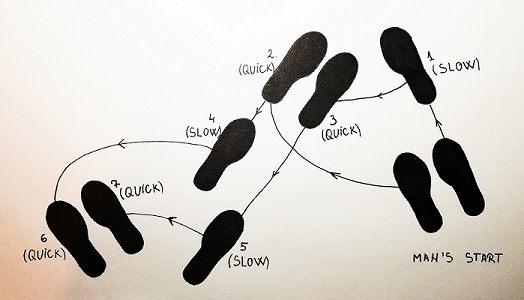

Quickstep steps
Basic Movement
Much like the Social Foxtrot, the Basic for the Quickstep is a zig zag step. Aside from the fact it is done to slightly faster music than Foxtrot, the main difference in the basic is that instead of starting forward on the Left foot and taking two steps before taking the side together (Quick Quick) only one is taken to start and therefore is taken with the Right foot. (Reverse that when thinking of the Ladies steps!)
LEADERS' / MEN’S FOOTWORK
Face your nearest wall . Then turn to your left slightly so that you are on a diagonal.
Start with your Right foot and take one Slow step forward. On the “Quick, Quick” you take a side step onto your Left foot first, changing your angle 90° so that you are now facing the corner to your right. And close your Right foot to your Left on the second Quick.
Step back on your Left foot for the next set of two walks (Slow, Slow) and side together Left, Right – changing the angle back to your original line (Quick, Quick).

Man's steps (forward)
Repeat moving forward with your left foot again to continue.
Rhythm - Slow, slow, quick, quick.
FOLLOWER’S / LADIES’ FOOTWORK
For this basic movement, the lady exactly mirrors the man’s steps. You start with your back to the closest wall and then turn slightly so that your Right shoulder is closer to the centre of the circle.
Start with your Left Foot and take one step backwards on a “Slow” count.
Step side onto your Right foot and close your Left foot to your Right on the “Quick Quick”. As you take these two steps you should change the angle of your body 90° to be facing a new diagonal.
Step forward with your Right foot and then your left on the next two “Slow” counts and then do another 90° turn back to where you started on the “Quick, Quick” stepping side on your right foot and bringing your feet together with your left.
Woman's steps (forward)
Continue by stepping back again with your Right foot.
Rhythm - Slow, slow, quick, quick.
Notes for both the leader and follower:
- All forward and backwards steps should be “in line” – which means on the same track as your partner’s feet. Do not attempt to step around or outside your partner, merely place your foot into the space vacated by theirs.
- To turn corners, slightly change the degree of your turn on the side together to facilitate moving around the corner. Make sure that the gent is always moving generally towards his left side and the lady to her right around the room.
- When stepping forward, step onto your heel – as you would when walking normally.
- When stepping backwards, step onto your toe and roll through the foot – as you would should you need to walk backwards generally.
- As this is a dance which ALWAYS changes feet – and is very much like walking in that way – I would count the rhythm when practicing instead of the feet. It is always “Slow, Slow, Quick, Quick-Slow, Slow, Quick, Quick-" etc instead of "Left, Right, Left, Right, Left, Right..." etc.